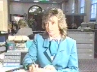

Change of Name on TVS
I should also point out that this is one of the most embarrassing things in my entire life. I never show the video to anyone, and that's why there's no movie on this page, just stills, and they're bad enough. Cringe.
Here's what happened.
- The famous Fred Dinenage in Studio says:
-
Finally, a student from Brighton has decided that he's a bit unhappy with his name; I know what he means. So Piran [mis-pronounced as Pie Ran] Montford changed his name by deed poll. It's now an amazing ten names long, and has nearly three times as many letters as the alphabet. Natalie Gray reports. - Cut to me walking into the bank. Natalie Gray says:
-
Meet Piran Dibdin NanKivell Aglio Ælius Raphael Odo Diggory Denzil Montford. He got his new name on Thursday, and is it for the first time today to open a bank account. - I sit down in front of bank assistant, and she says:
-
That's fine, can I have your name please.
- I say:
-
Yes, it's Piran Dibdin NanKivell Aglio Ælius Raphael Odo Diggory Denzil
Montford.
- Look of shock on assistant's face. She says:
-

I beg your pardon. [Actually unrehearsed!] - I repeat:
-
Piran Dibdin NanKivell Aglio...
- The reporter does a voice over
-
Piran used to be plain old Piran Dibdin Montford. He decided to change it, not because
it was a mouthful, but because it was too short.
- Cut to interview with me. I'm saying:
-
It's mainly to maintain the family names. Most of them are dying out, as you can probably imagine. - She asks:
-
But what was wrong with plain old Piran Dibdin Montford?
- I reply:
-
I suppose it was too short.
- She asks:
-
Don't you think that ten names is going a bit over the top?
- I reply:
-
May be not. May be I'll add a few more in a few years time. I quite like the name
Pip.
- Cut to reporter talking with me and assistant in the background.
-
The only thing that bothers me is what's going to happen when he gets married. I mean can you imagine trying to remember all those names when you're standing there in church. I'm not even going to try.Natalie Gray, Coast to Coast, Brighton.
- Back to studio with Fred Dinenage and Fern Brittain. She says:
-
What about filling in all those little forms that want your name and address, and you can't get it all in. - Fred's final words for the programme:
-
What about going home for tea.